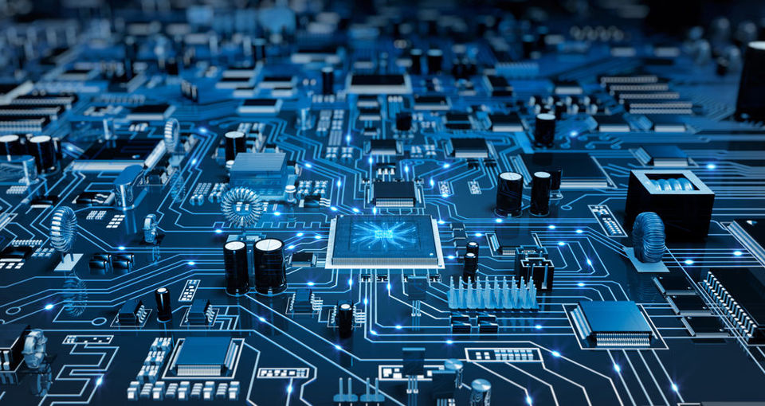
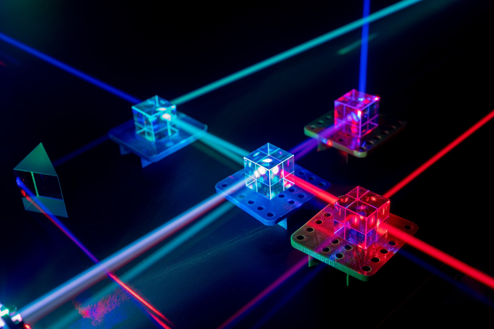
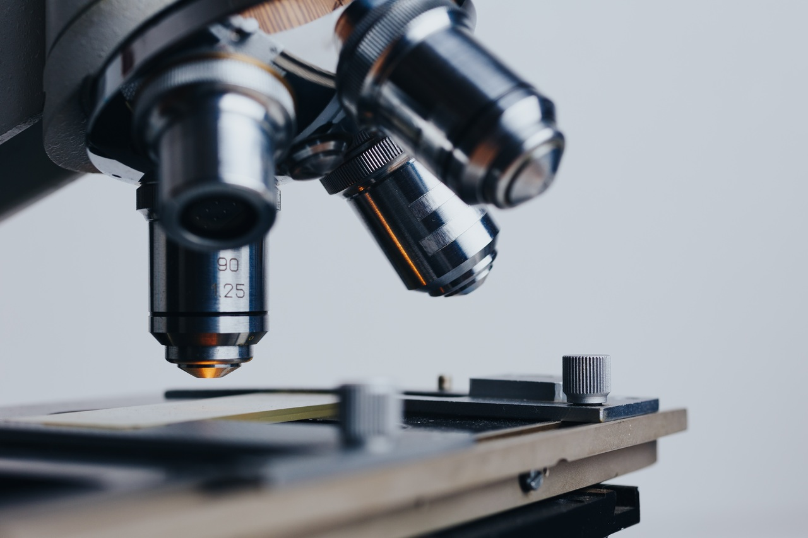

NATIONAL INSTITUTE OF TECHNOLOGY WARANGAL
About Us
Since its inception in 1959, the Department of Physics has kept pace with developments in advanced areas in the discipline, the introduction of a three year M.Sc. (Tech.) in Photonics, Electronics and Instrumentation Technologies in Engineering Physics course with specialisations reflecting that mindset. Such courses aim to develop professionals who are versatile and conversant with the needs of the industry. Admissions to the course are made through an All India Entrance Test - Joint Admission Test for M.Sc. (JAM) . Apart from its regular coursework, the course includes Industrial Training of eight weeks and six months of Project Work/Dissertation in various reputed R&D Organizations and industries. The Department strives to provide a balanced blend of both Science and Engineering curriculum and hands-on training for students. The course curriculum is upgraded regularly in keeping with the ever-changing needs and demands of the industry.
COURSE INFORMATION
First three semester ( 1st, 2nd & 3rd ) you will learn basic physics subjects like Electromagnetism, Quantum Mechanics, Mathematical Physics, Optics, Electronics and Solid State Physics, Atomic and Nuclear Physics and all other subjects. In third semester you have to choose one specialisation( Photonics, Electronics, Instrumentation ) based upon your CGPA.
Next two semester ( 4th and 5th ) you pursue in your specialisation and in last semester ( 6th ) you work on your project.
TESTS AND ASSIGNMENTS
Every semester for each subject you need to give Minor-1 , Mid-Exams , Minor-2 , End-Exams and Lab Exams .
For even semester you also need to give a seminar based upon your topic.

Electronics
Electronics deals with electrical circuits that involve active electrical components such as vacuum tubes, transistors, diodes, integrated circuits, optoelectronics, and sensors, associated passive electrical components, and interconnection technologies.
Photonics
Photonics is the physical science of light (photon) generation, detection, and manipulation through emission, transmission, modulation, signal processing, switching, amplification, and sensing.


Instrumentation
Instrumentation engineering is the science of the measurement and control of process variables within a production or manufacturing area. Meanwhile, control engineering, also called control systems engineering, is the engineering discipline that applies control theory to design systems with desired behaviors.